5 Design
Design can be understood as communication with and within the developers.
Goal: The software system can be further developed efficiently, and is easy to understand for new developers.
Belongs to the development and specifically detailed design category of software development.
Deals with the following topics:
- Introduction to Modelling
- Class diagrams
- Interaction diagrams
- State Diagrams
- UML State diagrams
- Dialog models
- Class design with OOAD
- OOAD introduction
- OOAD: Analysis Class diagram
- OOAD: Design Class Diagram
- Design Patterns
- Introduction
- Creational patterns
- Structural patterns
- Behavioral patterns
- Rationales (Communication of decisions)
- Summary of modelling techniques
Introduction to Modelling
A given team (approx 7 people) developes an understanding of the structure of the Software System, albeit without using code, since code is too detailed and is not conducive to understanding the overall structure of the software.
Instead an appropriate abstraction level is necessary \(\Rightarrow\) modelling languages.
Model: Abstraction of a system, expressed in a formal language / notation where irrelevant details are omitted.
Characteristics of models:
- mapping
- incompleteness
- pragmatic (a model is created with a certain purpose / goal)
Characteristics of a formal notation:
- syntax
- semantics
- pragmatics
- analysis techniques: type checking, consistency checks
- simulation techniques
- transformation techniques (refactoring, (algebraic) simplification)
- generation techniques
A notation is a ‘theory’ that enables to reason about and manipulate representations of objects from the domain.
4 + 1 Architectural View Model
4 different viewpoints representing different stakeholders:
Logical View \(\rightarrow\) End-users: functionality that the system provides to the end-users / clients.
UML diagrams:
- class diagrams
- state diagrams
Process View: dynamic aspects of the system, description of the system processes, how they communicate, run-time behavior of the system: concurrency, distribution, performance, scalability, etc.
UML diagrams:
- sequence diagram
- communication diagram
- activity diagram
Development (Implementation) View \(\rightarrow\) Programmers: system from programmers’ perspective, concerned with software management.
UML diagrams:
- package diagram
- component diagram
Physical View \(\rightarrow\) System-engineer: topology of the software components on the physical layer as well as the physical connection between these components.
UML diagrams:
- deployment diagram
- (+1): Scenarios / Use Case View:
- Architecture is described using a small set of use cases or scenarios
- Scenarios are Sequences of interactions between objects and between processes.
- used to identify architectural elements and to illustrate and validate the architectural design.
- used as a starting point for tests of an architecture prototype
UML
UML diagram categories:
- Structure diagrams \(\rightarrow\) statics of the system:
- class
- object
- component
- deployment
- package
- composite structure
- Behavior diagrams \(\rightarrow\) dynamics of the system
- interaction:
- sequence
- communication
- interaction overview
- timing
- Use Case
- Dialgue Model / Activity
- State
- interaction:
In the lecture especially:
- class diagrams
- object diagrams
- interaction diagrams
- state diagrams
- Dialogue Model / Activity Diagrams
Structure Diagrams
- Design:
- Class Diagram (analysis and design) (logical view)
- Object diagram (special cases) (logical view)
- package diagram (bundles of classes) (development view)
- Architecture:
- compositional structure diagram
- logical component diagram (internal and external view)
- distribution diagram (over the physical components)
Class Diagrams
important components of class diagrams:
- classes (objects)
- associations between classes:
- aggregation
- komposition
- attributes
- operations
- generalization / specialization relationship (inheritance)
- interfaces: a view on a class (a contract)
Behavior Diagrams
- Flows:
- Use case diagram (overview of the use case)
- Dialogue model / activity diagram (sequences of activities)
- state diagram (sequences of states)
- interaction:
- sequence diagram (sequence of messages)
- communication diagram (focus on a component)
- time diagram (communication between automata)
- interaction overview diagram (interaction of multiple interactions)
State Diagrams
UML extension of traditional state diagram aims to overcome some of the limitations FSMs. Thus UML state machines is an extension to the traditional mathematical FSMs.
specific to UML:
- hierarchically nested states
- orthogonal regions
- extended notion of actions
- characteristics of both Mealy and Moore machines:
- Mealy: actions that depend both on the state and the triggering event
- Moore: entry and exit action (only associated with states, not transitions)
Many software systems are event-driven (also called reactive):
- mouse click
- button press
- time tick
- arrival of a data packet
- …
Software systems react to events by taking actions and changing to another state \(\Rightarrow\) state transition. Advantages of using an FSM model to underlie the code:
- reduce the number of execution paths through the code
- simplify the conditions tested at each branching point
- simplify switching between different modes of execution.
Basic UML State Diagrams
- state: rounded rectangles labeled with state names
- transitions: arrows labeled with the triggering events optionally followed by list of actions
- event / trigger: the thing that causes the state transition
- action: the optional thing carried out by the system as a response to the event
- initial transition: originates from the solid circle (the default initial state when the system first begins - entry point) every diagram should have it. initial transitions can have associated actions
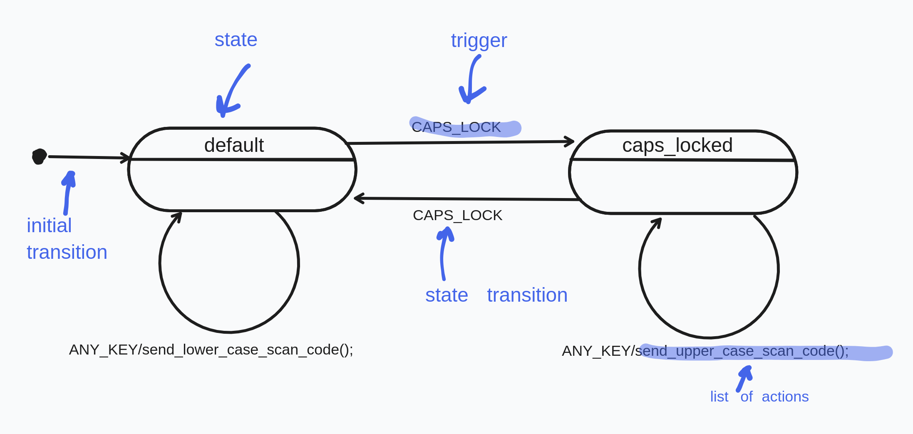
Elements of UML state machines:
- event / trigger: something that happens that effects the system.
- can have associated parameters
- an event instance can have a long life-cycle
- state: Governs the reaction of the state machine to events.
- a state can abstract away all possible (but irrelevant) event sequences and only capture the relevant ones.
- in the context of software systems a state is a single variable that can have only a limited number of values, usually an provided by an enum type \(\Rightarrow\) the value of the state variables fully defines thet current state of the system at any given time
- extended state: However interpreting the whole state of machines can become impractical very quickly (state explosion) \(\Rightarrow\) in UML state is spilt up into:
- enumerable state variable. Corresponds to the qualitative aspect of the whole state
- all other variables which (extended state). Corresponds to the quantitative aspect of the whole state. Quantitative aspects do not lead to a state change. (See below for more explanation)
- guard condition: in extended UML a transition can have a guard \(\Rightarrow\) transitions only fires if the guard is evaluated to true, related to extended states, simplifies number of states.
- actions and transitions: response of the system to an even/trigger.
- action:
- changing a variable
- performing I/O
- invoking a function
- generating another event instance
- changing to another state
- …
- state transition: switching from one state to another state
- action:
- run-to-completion execution model (RTC): processing of each event must carried out to completion before the next event can be carried out.
- incoming event can not interrupt this and are instead stored in an event queue
- This avoids internal concurrency issues within a single state machine.
- During even processing the system is unresponsive / unobservable.
- Advantage: simplicity
- Disadvantage: responsiveness of a state machines is determined by its longest RTC step.
- hierarchically nested states: repeating transitions common to a group of states can be factored out as a super (outer) state.
- the complexity of the state machine doesn’t explode (see calculator example below for more details)
- semantics:
- if a system is in a substate surrounded by a superstate, it is automatically also in that superstate, i.e. the superstate is inherited.
- the state machine will try to handle any event first in the context of the substate, but if it is not defined, it will delegated to the superstate.
- orthogonal regions:
- entry and exit actions :
- internal transitions:
- transition execution sequence:
- local versus external transitions:
- event deferral:
Extended State Example
Assume we want to introduce a limit to the number of times keys can be pressed on keyboard, from the beginning of its execution. In traditional way we would have to introduce 1000 states that would approach the final state incrementally (state explosion). Instead this quantitative information can be captured in an additional variable that does not effect the qualitative state of the system, and is managed via guard conditions:
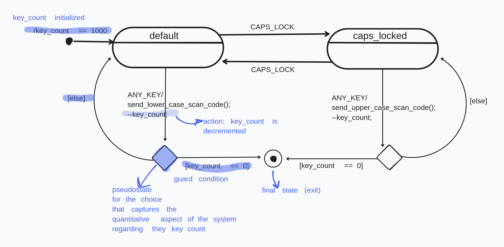
Hierarchical States Calculator Example
Modelling a simple pocket calculator with traditional FSM introduces many repetitive transitions:
- for every state the event ‘C’ changes the state to operand1
- for every state the event ‘OFF’ changes to the exit state.
Using the superstate on, this common behavior factored out and the total number of transitions is greatly reduced. Now when the system is, say, in the state opEntered and event ‘C’ takes place, it can’t be handled by the inner state since it is not defined. Then, by the semantics of the UML state machines, this event is relegated to the outer state, where it is defined to transition to itself. From there it enters the inner states entry point, which changes the state to operand1.
Analogue for ‘OFF’.
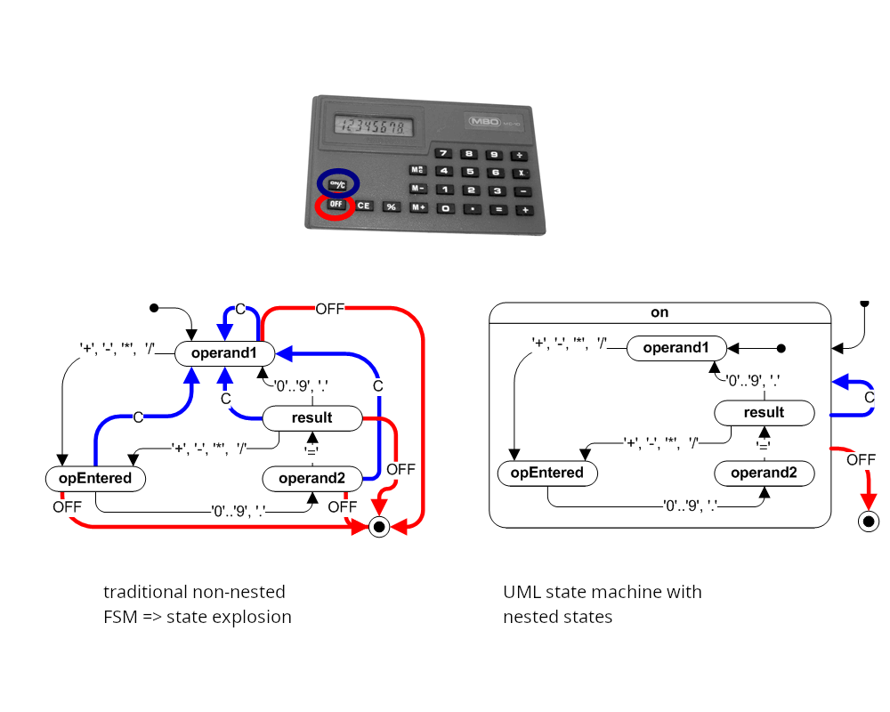
Dialog Models / Activity
Interaction Diagrams
interaction diagrams describe communication between various actors.
Various uml interaction diagrams:
- sequence diagrams
- communication diagrams
- time diagram
- interaction overview diagram
Sequence Diagram
Also called event diagrams or event scenarios.
Show process interactions arranged in time sequence. Depicts the processes and objects involved and the sequence of messages exchanged to carry out functionality.
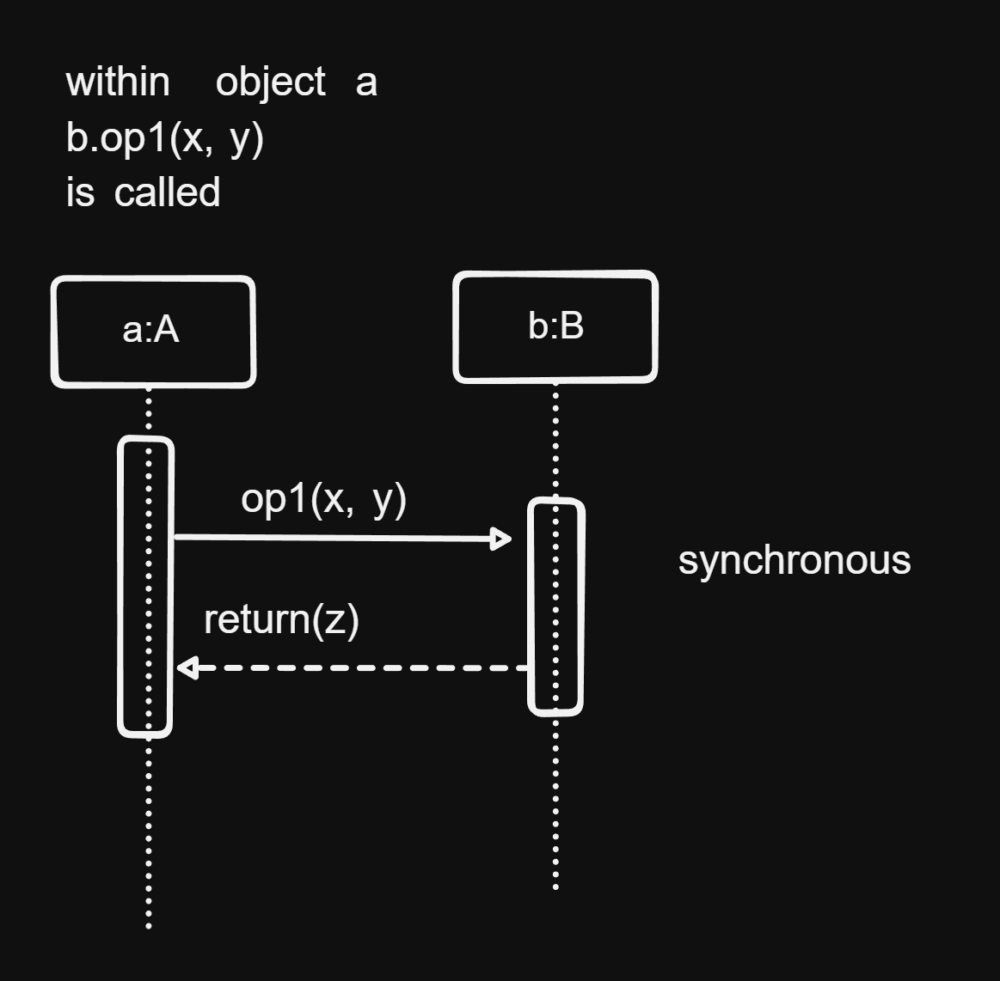
Class Design with OOAD
Steps of the software process:
- analysis and specification: gathering and representing requirements
- design: structure and architecture of the software is defined
- coding: implementation of the end product in detail.
Design has the following goals:
- partitioning the system into manageable units
- laying out a structure: relationship between the units / parts that make up the whole system
- hierarchical partitioning: abstraction that helps understand and maintain a large software system
results from requirements:
- Domain / Interaction data diagram: specification of the data in detail
- SFs or UCs: specification of functionality / how functionality is carried out
- Workspaces (UI-Structure): How and where is the data & SF represented and provided for the user, as well as the navigation between the workspaces.
- View (Virtual Window): the mockup of the GUI
Consideration when making design decisions:
- Data management classes: implementation of domain / interaction data diagram
- which data which classes?
- can some entities be directly taken as classes?
- what operations are necessary?
- how is data storage implemented?
- Classes for internal processing: Implementation of SFs
- how are SFs implemented / distributed among operations of which classes? (note that SFs do not generally correspond to individual operations, but are combinations of multiple ops)
- UI classes: Implement the views (virtual windows) and the navigation from the UI-structure.
Design Principles: Cohesion and Coupling
Cohesion
A measure of or degree to how much the elements of a component belong together.
Goal: high cohesion, i.e. elements within a module or component belong together strongly, are highly interdependent \(\Rightarrow\) good for maintenance.
We can’t easily partition a highly cohesive module into subparts, where the subparts are independent of each other.
How to achieve high cohesion:
- principles of object orientation (data encapsulation)
- using appropriate design patterns for coupling and decoupling
Coupling
A measure of the degree of how strongly different components depend on one another.
Goal: low coupling, i.e. low interdependence between different components
Low coupling is good for performance (communication is simpler)
how to reduce coupling:
- interface coupling: information exchange takes place only via interfaces.
- components should call other components as little as possible
- data coupling should be avoided: no shared data among different components
- structure coupling should avoided: no shared structure among different components
Simple and complex operations:
- Simple operation: only direct access of attributes (class access it’s own attributues)
- Complex operation: direct as well as indirect access of attributes (indirect access: class A access attributes of class B)
- increase coupling
- hinder cohesion
Complex operations should therefore be split up in smaller operations, or encapsulated in own class whose data they access.
OOAD
Object-oriented analysis & design \(\Rightarrow\) systematic development of the design model
the process of: requirements \(\Rightarrow\) class diagram:
- what decision should be made and how?
- what classes are needed, with what operations and attributes should the classes be equipped?
OOAD 2 step method:
- Analysis class model: defines class structure based on the requirements
- Design class model: concrete implementation of the analysis class model using frameworks, libraries and concrete classes, taking design goals, especially NFRs.
Analysis Class Model / Diagram
4 Steps:
- Determine classes, attributes, and association from the requirements, with appropriate names.
- Determine the operations of the classes: distribute basic operations and SFs as methods (operations) in classes, taking high cohesion and low coupling into account.
- Determine complex associations and inheritance relationships
- Consolidate the class diagram: possibly dissolve interaction / ui classes, consolidate associations.
3 types of classes:
- entity class: describes objects with permanent existence
- e.g.: film, actor.
- control class: describes processes. SFs are initially modelled as such. Serve as placeholder for complex operations, ultimately are dissolved and distributed as methods among various appropriate classes
- boundary / interaction / dialogue class: bundles data and operations that are provided on the UI.
Step 1
Goal: Determine / derive classes from the requirements
Rules:
- Entity classes:
- Entities from the data diagram become entity classes, e.g. film and actor.
- associations from the data diagram become the associates between the classes
- Control classes:
- SF are initially modelled as such
- control classes are linked to the entity classes, whose attributes they access
- control classes are linked to other control classes, which they cooperate with.
- Boundary classes:
- Workspaces \(\Rightarrow\) boundary classes
- are linked to the entity classes, that are displayed in the workspace
- are linked to the control classes of the SFs that are provided on the UI interface.
- navigation between workspaces \(\Rightarrow\) links / associations between boundary classes.
Step 2
Goal: Determine the operations of the classes, dissolve control classes by distributing them among the various classes as methods. (occasionally a control class can be retained as a concrete class)
Rules:
- Dissolve control classes by distributing them among entity and dialogue classes:
- canonical solution: if control class operates only on the attributes of a single class, it becomes a method in that class.
- simple solution: if multiple classes are involved, but the input and output are associated to one class respectively, then the the control class can be … ?
- complex solution: if multiple classes are involved, and the output and input relate to multiple classes, then … ? \(\Rightarrow\) sometimes objectification of the control class
- Operations can be split up or united, depending on the situation.
- an operation can cover multiple SFs (only for the canonical solution)
- SFs can be implemented by multiple operations
Step 3
Goal: Use inheritance and model complex associations
Step 4
Consolidate the model and possibly dissolve the interaction classes
Rules:
- place interaction (ui) classes in a separate layer (e.g GUI layer)
- alternatively assign dialogue classes to some other classes: in this case the class is responsible both for data and representation on the GUI
- revising the associations: cover all possible communication links
- each class that has a complex operation must be associated to the classes that they call
- consolidate the associations
- provide multiplicities (cardinalities)
- no redundant links: associations that are not used in any SF should be removed.
Design Class Diagram / Model
Goal: preparation for coding by taking design goals into account.
Analysis class diagram gets refined with infrastructure classes (e.g. library) and completed, often using design patterns.
Steps:
- complete the list of attributes and operations
- determine the data types and access specifiers (private, protected, public, etc)
- specify operations (pre- and postconditions)
- define exceptions
- specify concrete data structures that realize associations
- eliminate multiple inheritance
- Consolidation via sequence diagrams
Step 3 - Specifying Operations
- Specification of an operation
- specifying the behavior of an operation by providing a contract, without providing the algorithm
- Design by Contract
- specifying an operation by providing pre-, post-condition and an invariant
- Usually only textual
- Sometimes directly supported by programming languages, e.g
- Javadoc comments in Java
- Assert in Java
Step 4 - Specifying Exceptions
Error situations in code are usually represented as special output values, however this does not guarantee that the caller will deal with the error.
Instead some programming languages have explicit error handling mechanisms called exceptions
in java:
try {
// code that throws and exception of type E
} catch (E e) {
// what to do with the caught exception
}Exception types:
- Exceptions in the domain: input doesn’t satisfy precondition, business logic is violated
- Technical failure: Connection to server failed, called object doesn’t exist
Ways to deal with exceptions:
- directly: using a specific operation
- handing over to the outside: via try-catch block
- not treating: letting the run-time system eventually catch the exceptions
Step 5 - Determining Concrete Data Structures
- Concretizing associations with a qualifier data structure:
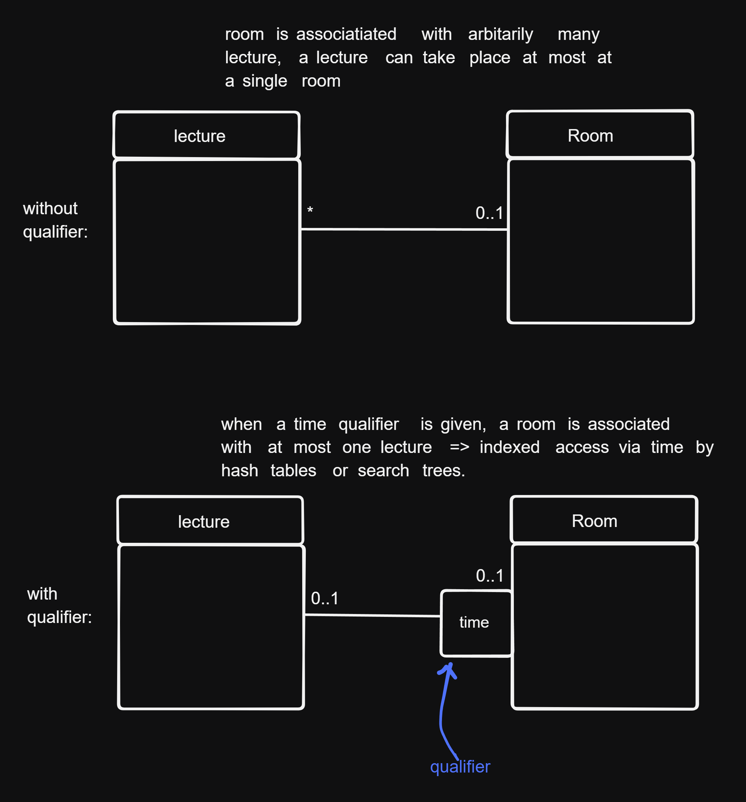
- concretizing associations by providing a fixed order: if there is a fixed order the objects associated to some other objects exist, this order can be fixed via a list or iterators.
Step 6 - Eliminating Multiple Inheritance
It is common to have multiple inheritance relationships in analysis models. This should be eliminated in design models using interfaces.
Step 7 - Consolidation via Sequence Diagrams
Implementations of complex operations (SFs) should be checked using sequence diagrams for:
- high coupling: are too many objects and too many method calls used for the implementation? Yes \(\Rightarrow\) reduce it by repartitoning the SF into operations
- low cohesion: is there an operation of a class that works with disjoint sets of attributes? Yes \(\Rightarrow\) can the class be partitioned into multiple classes and will it help with the complexity?
Design Patterns
Transferring experience of good class structure design. Design patterns describes the roles of classes, their dependencies and associations.
Types of design patterns:
- creational patterns (Erzeugungsmuster)
- structural patterns
- behavioral patterns (Verhaltensmuster)
How a pattern is described:
- name:
- problem: motivation, field of application, problem class
- solution:
- structure (class diagram)
- elements (classes, their associations, and their operations)
- interactions of objects (sequence diagram)
- discussion:
- advantages and disadvantages: when and why should be applied
- dependencies, limitations
- special cases
- known applications (how common is it, how mature is it)
advantages:
- proven solutions to recurring problems
- better readability & maintainability of software design and source code
- easier communication via a common vocabulary / language of patterns
- among architects and developers
- among developers
disadvantages:
- using a pattern in a false context: overhead due to unnecessary classes, bad readability, maintainability etc
Creational Patterns
Deal with creation of objects:
- try to hide, unify or simplify it
- describe what is created, how and when
Examples:
- singleton
- abstract superclass
- factory method
- prototype
- builder
Singleton
problem: there can exist only a single instance object of a given type.
solution:
public final class S { private static S instance; private S(); // private constructor public static S getInstance () { if (instance == null) instance = new S(); return instance; } } // usage of singleton // S s = new S() can't be called because constructor is private, instead S s = S.getInstance(); // s refers to the single central initialized static instance of S
Factory Method
- problem: When creating an object, we don’t want to have to specify their exact classes, i.e we should be able to choose between variouis variants of a product.
- solution:
- Rather than creating an object by calling a constructor, the creation of the object is delegated to a factory method
- The code that creates the object is outsourced to an own class called Factory or Creator. Optionally the Creator / Factory class can be abstract or an interface and the object creation can be implemented in subclasses inheriting from it \(\Rightarrow\) subclass decides which object type is to be created.
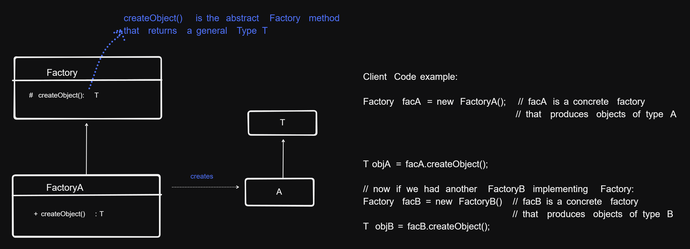
Builder
- problem: Objects of the a class can be very different if they are complex, requiring a different constructions. How can the creation of a complex object be simplified, specifically, how can the creation of a process be abstracted from its representation, so that the details of the way the object is created can be later easily changed, without having to modify the class?
- solution: Encapsulate the building of a complex object in a separate Builder class, to which the creaetion of the object is delegated to, instead of creating it directly
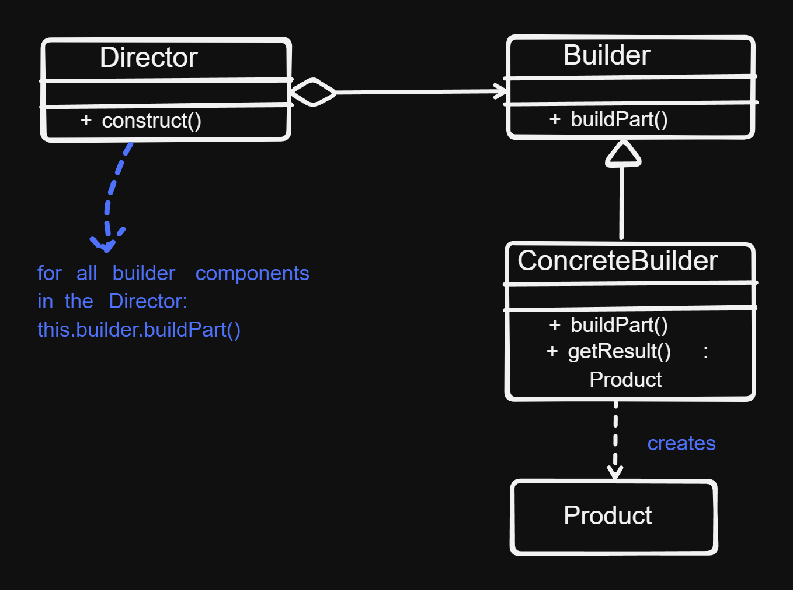
- Director: assembles the object from the sub-parts whose construction is delegated to
Builderobjects. - Builder: the abstract interface for creating objects (products)
- ConcreteBuilder: provides the implementation for the builder
Abstract Superclass
- problem: different classes contain identical groups of attributes and methods
- solution: refactor the classes, such that the common groups of attributes and methods are separated in an abstract super class, from which the old classes inherit.
Structural Patterns
Deal with combinations and relationships of classes \(\Rightarrow\) allow building larger structures
examples:
- Composite
- adapter
- proxy
- bridge
- director
- facade
- flyweight
Composite Pattern
- problem: modelling and implementing hierarchical (tree) structures
- solution: a uniform abstract super class from which a leaf and a node class inherits
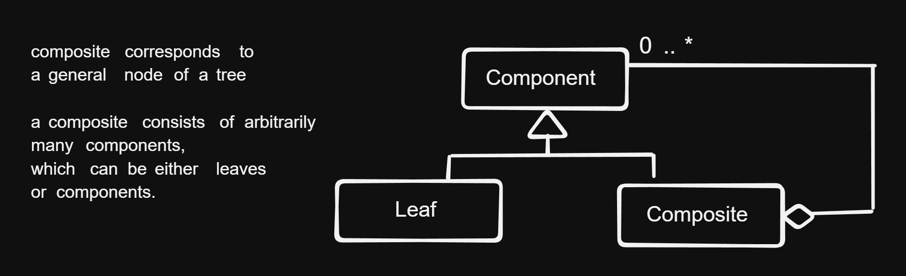
Adapter Pattern
Also called wrapper
- problem: A Class A (client) requires a class with a certain interface. There is another class B, that provides a different kind of interface. We would like to use class B in class A, even though the interface that B provides is not what A requires.
- solution: Define a separate adapter class that converts the incompatible interface of class B (adaptee, i.e. the class to be adapted) into the interface that A expects. (this interface is called the target interface).
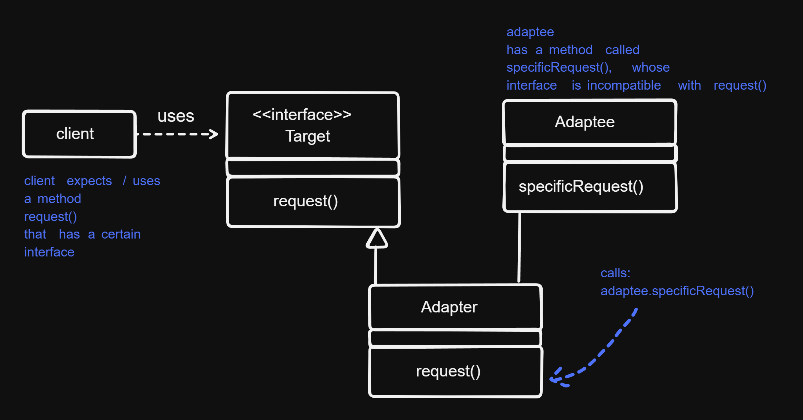
Proxy
- problem:
- Access to an object should be controlled (because it is expensive or sensitive from a security standpoint)
- Additional functionality should be provided when accessing an object
- solution: A separate proxy object that can be used as a substitute for the other object (subject). Proxy implements necessary additional functionality.
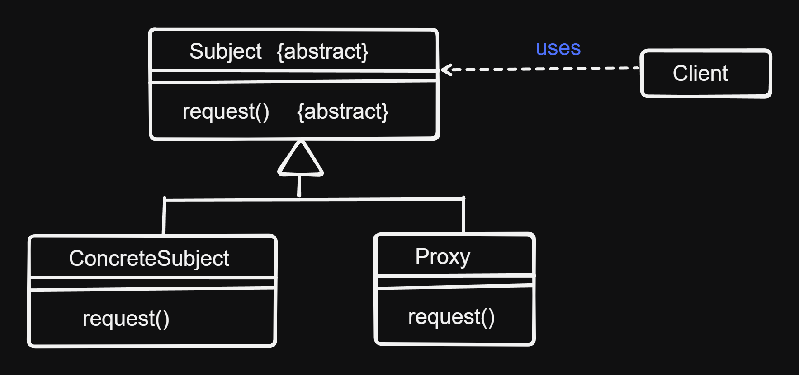
Behavioral Patterns
Deal with algorithms and assigning states to objects. Describe not only classes and objects but their interactions.
examples:
- template method pattern
- command
- observer
- visitor
- interpreter
- memento
- strategy
- iterator
- mediator
- state
- chain of responsibility
Template Method Pattern
- problem: a method consists both from fixed but also from changeable elements
- solution:
- define a template method, that comprises the scaffolding of the method
- the algorithm is concretely implemented in the inheriting subclasses
- fixed components making up the method are factored to the superclass
Chain of Responsibility
- problem:
- The sender of a request / message and the receiver of the message shouldn’t be coupled, or only loosely coupled.
- It should be possible for more than one receiver to handle the request in flexible ways
- solution: A chain of receiver objects that, depending on run-time conditions, either handle the request or forward it to the next receiver. This enables a flexible handling of the request. In other words the sender does not know which object will handle the request or how exactly.
Observer
- problem: There is a one to many relationship between an object called subject, and its dependencies, called observers. Observers must be notified whenever the state of the subject changes and react to it. In other words observers “observe” the subject and react to its state changes.
- solution:
- Subject maintains a list of observers. Observers have methods to subscribe to or unsubscribe from the list.
- Subject has a method called
notify(), that calls theupdate()method in each of the observers that are in the subscribers list. Theupdate()method of each observer updates each one, making it to react to the state change of the subject.
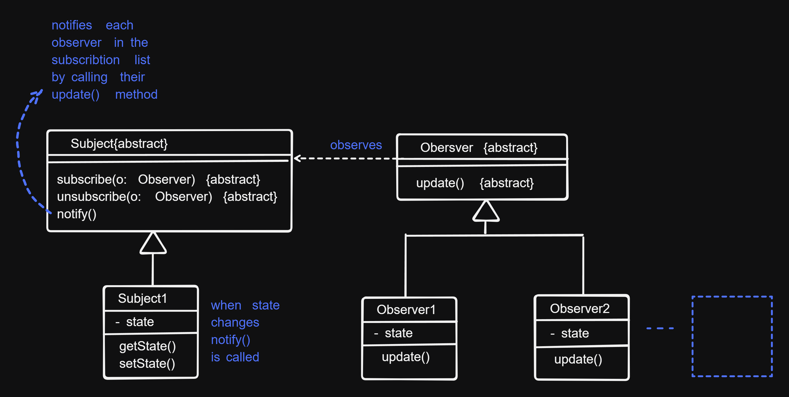
Visitor
Strategy
Rationales (Communication of Decisions)
Documents contain only the last decision. Communication of all sorts of decisions and history of discarded decisions via Rationales.
How are rationales described:
- questions: concrete problems that don’t have an obvious solution
- options: describe alternative solutions to a problem
- criteria: quality requirements
- arguments: condensate and summarize discussions
- decisions:
- relates to one or more open questions
- summarizes the chosen options and arguments that support it